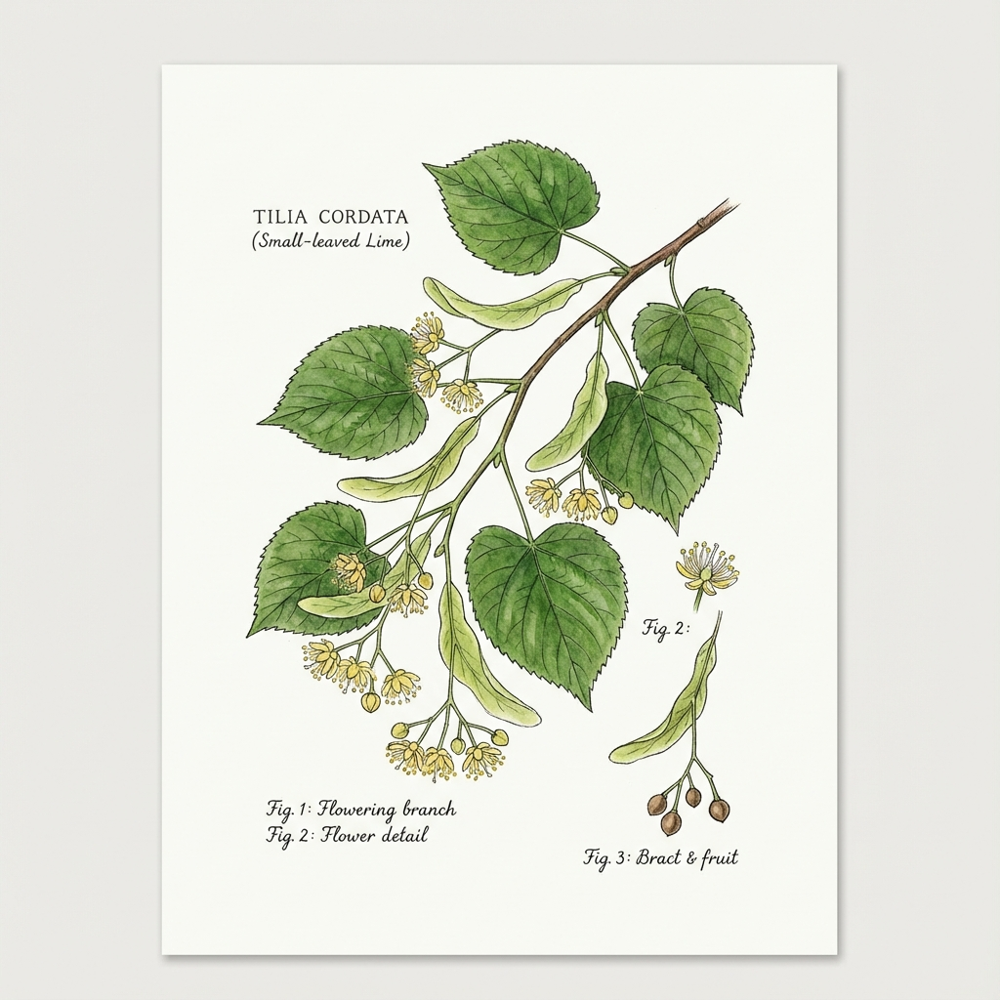

1. Winterlinde (Lípa)
Tilia cordata
🗣️ Lokale Bedeutung: Nationalbaum der Tschechen. Steht in jedem Dorfzentrum.
🔍 Erkennung
- Herzförmige Blätter
- Wunderbarer süßer Duft im Juni/Juli
- Blüten mit Flugblatt
- Mächtige Baumkronen
📍 Fundorte in Tschechien
Dorfplätze, Alleen, Parks. Überall als Symbol gepflanzt.
📅 Sammelzeit
Blüten: Juni - Juli (an sonnigen Tagen mittags)
💊 Heilwirkung
- Schweißtreibend - Erkältungsklassiker
- Beruhigend - Hilft Kindern beim Schlafen
- Immunsystem - Vorbeugend im Winter
📋 Anwendung
Lípový čaj (Lindentee): Mit Honig und Zitrone. Das Standardgetränk bei Krankheit.